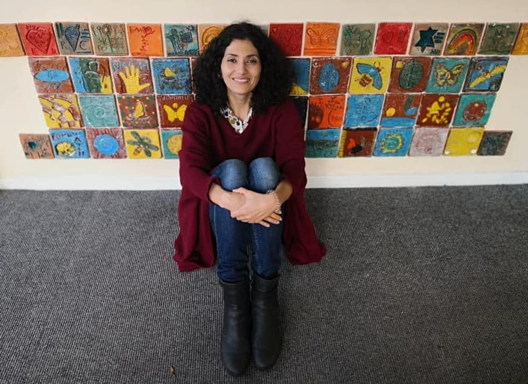

About
I am Monir, originally from Persia (Iran), where I worked in Mashhad’s Cultural Heritage organisation for over six years. I also ran pottery and ceramics groups.
When I moved to England in 2010, I trained to become a primary school teacher and started working in a school. But soon began to miss my passion for pottery. I left the school to set up Beauty of Clay, a social enterprise.
I have recently been exploring my own art through children's drawings which I am finding very fascinating. Kids drawings are a precious & valuable form of art that can offer unique insights into their minds and imagination. They are full of creativity, freedom and innocence. I believe each child is an artist who has an infinite ability to create art pieces that are not comparable with any other art form.
Working with clay can also have a therapeutic effect with lots of amazing benefits. I'm hoping to provide exposure and understanding of Persian design principles. And through this to encourage and teach people to develop a sensitivity and understanding of the medium, and express this in their own creations.
Follow Me
You can find out more on my Facebook page or see more examples of my work on Instagram.